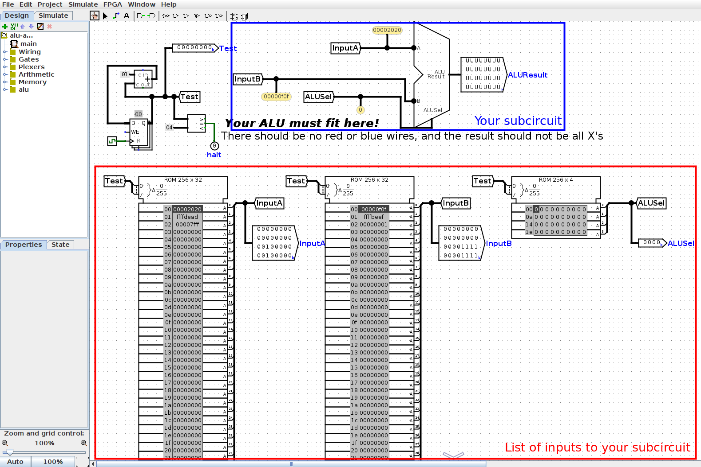
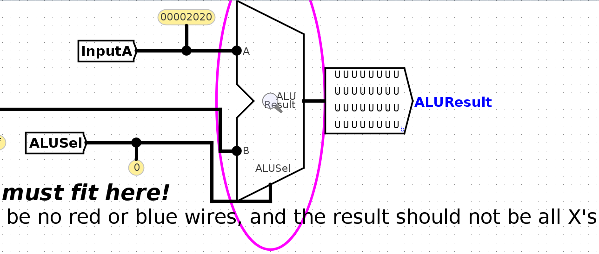
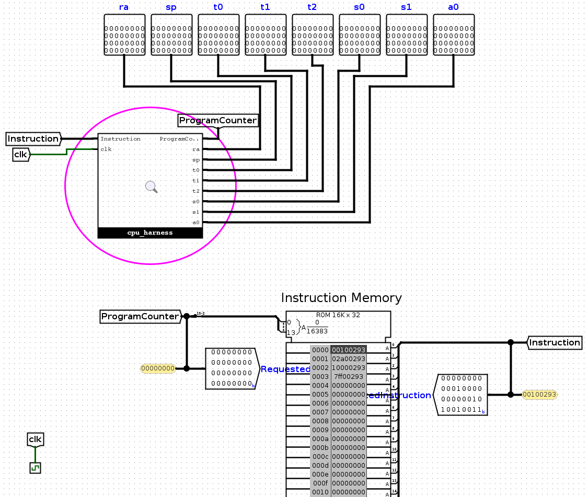

Appendix: Testing and Debugging
Unit Tests
The provided unit tests check functionality of your subcircuits (e.g. immediate generator, branch comparator). They do not check your entire CPU implementation. You don't need to write any unit tests yourself.
As an example, let's debug the alu-add unit test. First, run the ALU unit tests with bash test.sh test_alu. If the test doesn't pass, this will print out the difference between your subcircuit output and the reference output.
Viewing Output Files
The next step to debug unit tests is to compare the expected reference output to your subcircuit output. These output files will always be in the out directory. You can use bash test.sh format filename (replacing filename) to view the output files.
View the reference output with bash test.sh format tests/unit-alu/out/alu-add.ref. You should see this reference output:
Time ALUSel A B ALUResult
00 0 00002020 00000f0f 00002f2f
01 0 ffffdead ffffbeef ffff9d9c
02 0 00007fff 00000001 00008000
03 0 00000000 00000000 00000000
This shows the inputs (A, B, and ALUSel) sent to your subcircuit at each time step, and the expected output (ALUResult).
Next, run bash test.sh format tests/unit-alu/out/alu-add.out to see the output from your subcircuit. Here's the output when the test is run on unmodified starter code:
Time ALUSel A B ALUResult
00 0 00002020 00000f0f UUUUUUUU
01 0 ffffdead ffffbeef UUUUUUUU
02 0 00007fff 00000001 UUUUUUUU
03 0 00000000 00000000 UUUUUUUU
Note that in the example, the inputs to your subcircuit are the same, but the output (ALUResult) of your subcircuit is different (undefined).
Using Debugging Circuits
Each unit test has a .circ test circuit you can use for debugging. As an example, open tests/unit-alu/alu-add.circ, which corresponds to the failed test from the previous section. The first thing you'll see in this circuit is the testing harness:

This feeds a sequence of inputs (InputA, InputB, and ALUSel) to your ALU.
The ROM (in the red box) contains a list of inputs to your circuit. The first input (InputA = 0x00002020, InputB = 0x00000f0f, ALUSel = 0b0000) is highlighted in dark gray. You can also see these values being passed into your ALU (in the blue box) with the probes.
In this picture, the ALUResult output from your ALU is undefined (all Us). To see why, we can view our ALU subcircuit to see what logic it's doing. To click into your ALU, you can either right-click the ALU and select "View alu", or click the ALU and click the magnifying glass, as shown below:


Inside your ALU subcircuit, you can see inputs (A, B, and ALUSel) provided from the harness to your subcircuit. You can click on wires to see the values in those wires.

If the output of your subcircuit isn't what you expect, you can probe wires to investigate where the incorrect output is coming from. In the starter circuit, the ALUResult output is undefined. In this case, note that the ALUResult tunnel is undefined, so we probably want to send a value to this tunnel.
To return to the harness, you can click on main in the Simulate → Active Simulations tab in the top-left corner.
To view later inputs, click Simulate → Manual Tick Full Cycle, which will highlight the next row of the ROM blocks and send this next input into your subcircuit. You can tick cycles while viewing your ALU subcircuit to see later inputs.
To reset the simulation, click Simulate → Reset Simulator. You can also close and re-open the debugging circuit.
Integration Tests
Integration tests execute RISC-V instructions on your entire CPU and compare the outputs to the result of running those instructions on Venus. You'll need to make your own integration tests by writing out RISC-V instructions (the testing framework will then create the testing and debugging circuit for you).
In addition to the example below, please check out this video regarding writing integration tests.
As an example, let's debug the addi-basic unit test. First, run the addi integration tests with bash test.sh test_addi. If the test doesn't pass, this will print out the difference between your CPU output and the reference output.
Viewing Testing Code
Before we can figure out why this test failed, we should first figure out what code this test tried to run on your CPU.
The RISC-V instructions being executed by your CPU will be inside the in directory. In this example, view tests/integration-addi/in/addi-basic.s to see what RISC-V instructions are being run in this test. You should see these instructions:
addi t0, x0, 1
addi t0, x0, 42
addi t0, x0, 256
addi t0, x0, 2047
Reading Test Output
If an integration test fails, you should see some terminal output like this:
$ bash test.sh test_addi
FAIL: tests/integration-addi/addi-basic.circ (Did not match expected output)
Time PC Instruc. ra (x1) sp (x2) t0 (x5) t1 (x6) t2 (x7) s0 (x8) s1 (x9) a0 (x10)
Reference: 0001 00000004 02a00293 00000000 00000000 00000001 00000000 00000000 00000000 00000000 00000000
Student: 0001 00000004 02a00293 00000000 00000000 00000000 00000000 00000000 00000000 00000000 00000000
---
Reference: 0002 00000008 10000293 00000000 00000000 0000002a 00000000 00000000 00000000 00000000 00000000
Student: 0002 00000008 10000293 00000000 00000000 00000000 00000000 00000000 00000000 00000000 00000000
---
Reference: 0003 0000000c 7ff00293 00000000 00000000 00000100 00000000 00000000 00000000 00000000 00000000
Student: 0003 0000000c 7ff00293 00000000 00000000 00000000 00000000 00000000 00000000 00000000 00000000
---
Each row of output shows the program counter (PC), instruction, and values in the 8 debug registers at each time step of running the input program.
You might see a lot of rows of output, but let's focus on the first two rows, which shows the first time step when your CPU doesn't match the reference output. In this case, that's time step 1.
In the first set of Reference/Student output, look for registers with mismatched values. In the above output, it looks like t0 should hold the value 1, but in your CPU, t0 holds the value 0.
Using the terminal output and the RISC-V code, try to work out what failed on the time step immediately before the first failing time step. In this output, since incorrect output showed up at time 1, something must have gone wrong at time 0. At time 0, the RISC-V code executed addi t0, x0, 1 - now we can see why the reference output has a 1 in t0. However, our implementation did not put a 1 in t0, so it looks like the very first addi instruction didn't execute correctly.
Reading Jump/Branch Test Output
In tests like addi-basic, the RISC-V instructions execute in sequence, so it's simple to work out which instruction failed. For example, if the first line of terminal output shows time step 0003, you know that the instruction at time step 2 failed, and this instruction must be addi t0, x0, 256 (the second instruction in the testing code, zero-indexed).
However, when we're running code with jumps and branches, the RISC-V instructions don't execute in sequence, so we have to be more careful to figure out which instruction failed. Consider the output below:
$ bash test.sh test_integration_branch
FAIL: tests/integration-branch/branch-basic.circ (Did not match expected output)
Time PC Instruc. ra (x1) sp (x2) t0 (x5) t1 (x6) t2 (x7) s0 (x8) s1 (x9) a0 (x10)
Reference: 0005 00000018 fe948ce3 00000000 00000000 00000000 00000000 00000000 ffffffff 00000001 00000000
Student: 0005 00000024 fe944ce3 00000000 00000000 00000000 00000000 00000000 ffffffff 00000001 00000000
---
Reference: 0006 00000010 fe04cce3 00000000 00000000 00000000 00000000 00000000 ffffffff 00000001 00000000
Student: 0006 00000028 fe000ce3 00000000 00000000 00000000 00000000 00000000 ffffffff 00000001 00000000
---
Reference: 0007 00000014 fe000ce3 00000000 00000000 00000000 00000000 00000000 ffffffff 00000001 00000000
Student: 0007 00000020 fe904ce3 00000000 00000000 00000000 00000000 00000000 ffffffff 00000001 00000000
---
We know that the instruction at time step 4 failed, but which instruction is that? Let's check the RISC-V code in tests/integration-branch/in/branch-basic.s:
addi s1, x0, 1
addi s0, x0, -1
label5: beq x0, x0, label1
label6: bltu x0, s0, label8
label4: blt s1, x0, label5
beq x0, x0, label6
label3: beq s1, s1, label4
label10: beq s0, s0, end
label2: blt x0, s1, label3
label9: blt s0, s1, label10
label1: beq x0, x0, label2
label8: bltu s1, s1, label9
beq s1, s1, label9
end: addi s0, x0, 2
- At time step 0,
addi s1 x0 1executes. - At time step 1,
addi s0 x0 -1executes. - At time step 2,
beq x0 x0 label1executes, causing a branch to be taken. - At time step 3,
beq x0 x0 label2(the line atlabel1) executes, causing a branch to be taken. - At time step 4,
blt x0 s1 label3(the line atlabel2) executes.
At time step 4, s1 holds 1, so the branch at time step 4 should be taken. This means at time step 5, we should be executing the instruction at label3. This is the 6th instruction (zero-indexed), which corresponds to PC value 24 (each instruction is 4 bytes), which is 0x18 (the value under PC in the reference output).
However, in our output, the PC is at 0x24, or 36 in decimal. This is the 9th instruction, which is label9 (the line directly after label2). It looks like at time step 4, the branch instruction should have updated the PC by taking a branch, but in our implementation, the PC was updated incorrectly.
Opening Debugging Circuits
Each integration test has a .circ test circuit you can use for debugging. To debug the example test from the previous section, open tests/integration-addi/addi-basic.circ.

The top-level harness for each integration test contains a ROM block (bottom half of screenshot) containing the RISC-V instructions for that test, representing IMEM (instruction memory). These instructions are passed into your CPU (the circled cpu_harness block at the top). You can also see the 8 debug register outputs; the testing framework will log their values into the .out file when running the test.
To view your CPU circuit, either right-click the cpu_harness block and select "View cpu_harness", or click the cpu_harness block and click the magnifying glass. This takes you into the CPU harness, where your CPU interacts with memory. Click another time into the cpu block, and now you should see the CPU you've been wiring.
To step through the RISC-V instructions, click Simulate → Manual Tick Full Cycle. In each clock cycle, your CPU will output a new ProgramCounter to the harness, which will use the new PC to select the next instruction for your CPU to execute. In this addi test, the instructions execute in sequence, but when testing branches and jumps later, the CPU could output a different ProgramCounter value (not always adding 4) and execute the instructions in a different order.
To reset the simulation, click Simulate → Reset Simulator. You can also close and re-open the debugging circuit.
Time Step Counter
When instructions don't execute in sequence, it can be hard to figure out how many cycles to tick before you reach the first failing instruction. To make that easier, we recommend adding a small counter circuit to your cpu.circ circuit:

This is the same logic as the PC circuit in the starter code, except the counter circuit adds 1 at each time step instead of adding 4. Also, the ProgramCounter tunnel has been replaced with a Probe that lets you view the value of the wire while debugging.
This counter circuit is only here for debugging, not for your CPU implementation. When you modify your PC circuit to handle jumps and branches, this counter circuit will still be adding 1 at every time step, allowing you to keep track of when the first failing instruction occurs.
Now, you can use this counter to stop at the first failing instruction. For example, if your terminal output looks like this:
$ bash test.sh test_integration_branch
FAIL: tests/integration-branch/branch-basic.circ (Did not match expected output)
Time PC Instruc. ra (x1) sp (x2) t0 (x5) t1 (x6) t2 (x7) s0 (x8) s1 (x9) a0 (x10)
Reference: 0006 00000010 fe04cce3 00000000 00000000 00000000 00000000 00000000 ffffffff 00000001 00000000
Student: 0006 00000028 fe000ce3 00000000 00000000 00000000 00000000 00000000 ffffffff 00000001 00000000
---
Reference: 0007 00000014 fe000ce3 00000000 00000000 00000000 00000000 00000000 ffffffff 00000001 00000000
Student: 0007 00000020 fe904ce3 00000000 00000000 00000000 00000000 00000000 ffffffff 00000001 00000000
---
You know that the instruction at time step 5 failed, so you should go into the debugging circuit and tick the clock until the counter circuit is showing 5. Now, you can start poking around to see what instruction is currently executing, and why it's failing.
Using Debugging Circuits
At this point, you should have identified which RISC-V instruction is failing on your circuit, the expected register values after that instruction, and your register values after that instruction. You should have also opened a debugging circuit and ticked the clock until the failing instruction. Now, it's time to poke at all the wires in your circuit to see why this instruction is failing.
Some useful wires you can poke:
- If the instruction writes back to a register: which RegFile input corresponds to the data we're writing on this cycle?
- If the instruction uses the ALU for computation: what are the three inputs (A, B, and ALUSel) to the ALU, and are they what you expect? What is the output from the ALU, and is it what you expect?
- If the instruction is a branch/jump: what value is getting written to the PC register on the next clock cycle? Is that value what you expect? Which control logic signal determines the value written to the PC register? Does that signal have the right value?
- If the instruction is a store/load instruction: what are the three inputs to DMEM, and are they what you expect? What is the output from DMEM, and is it what you expect?
Note: If the failing instruction is a load instruction, it could be the case that your store instruction failed to write to DMEM first, and now the load instruction can't read a value that was never written to DMEM. In this case, you might want to stop at store instructions too and check that they're working as you expect.
Writing Integration Tests
To write an integration test, all you need to do is write some RISC-V instructions for your CPU to run, and the testing framework will handle the rest.
- Navigate to
tests/integration-custom/in. - Write a RISC-V test and save it in a filename ending in
.s. - Run
bash test.sh test_custom.
Some things to keep in mind when writing your RISC-V instructions:
The testing framework only checks the values in the 8 debug registers when comparing your CPU output with the reference output, so when writing your own tests, make sure to only use the 8 debug registers.
This also means the testing framework doesn't check memory (DMEM) when comparing your CPU with the reference. To check values in memory or a non-debug register, you'll need to put the value back into a debug register. For example, to test if a store works, you'll probably have to load the value back from memory into a debug register to see if the value was successfully stored.
IMEM and DMEM are separate in Logisim, but combined in Venus. This means that if you write assembly code that tries to access memory overlapping with instructions, Venus will throw an error. Since counting exactly how many instructions your assembly code requires, and multiplying that by 4 can be annoying, we suggest you load/store using addresses greater than 0x3E8 (leaving space for 1000 bytes/250 instructions), and increase this offset if you have more instructions.
Make sure to write RISC-V instructions that behave differently on a working CPU and a buggy CPU. For example, consider this test:
addi t0, x0, 0
addi t1, x0, 0
This wouldn't be very useful to check for a working CPU, because the output in the debugging registers could be all zeros even if your CPU doesn't work. As another example:
beq t0, t0, 4
addi t1, x0, 10
On a working CPU, this would branch to the addi instruction. On a buggy CPU where the branch is incorrectly not taken, this would still execute the addi instruction, so this test doesn't do a very good job of distinguishing working circuits from buggy circuits.
Logisim Tips
This section contains some helpful Logisim tips and pitfalls to avoid.
Wiring
- If you want to know more details about each component, go to
Help -> Library Referencefor more information on the component and its inputs and outputs. - Use tunnels! They will make your wiring cleaner and easier to follow, and will reduce your chances of encountering crossed wires or unexpected errors.
- Ensure you name your tunnels correctly. The labels are case sensitive!
- You can hover your cursor over an input/output on a component to get slightly more information about that input/output.
Wiring Pitfalls
- Your circuits should always fit in the provided harnesses. This means that you should not edit the provided input/output pins or add new ones. To ensure your circuit fits int he harness, you can open the harnesses in the
harnessesfolder and check that there are no errors. - Don't create new
.circfiles. You can make additional subcircuits if you want, but they must be in existing files.
Subcircuits
- Note that if you modify a subcircuit, and another circuit file uses that subcircuit, you will need to close and re-open the outer circuit to load the changes from the subcircuit. For example, if you modify
imm-gen.circ, you should close and re-opencpu.circto load your changes. - When modifying a subcircuit, you should always open up the subcircuit file. For example, you should modify
imm-gen.circ, not theimm-gensubcircuit incpu.circ.
Signal Tips
- The clock input signal (
clk) can be sent into subcircuits or attached directly to the clock inputs of memory units in Logisim, but should not otherwise be gated (i.e., do not invert it, do notANDit with anything, etc.). - We recommend not using the
Enableinput on your MUXes. In fact, you can turn that attribute off (Include Enable?). We also recommend that you disable theThree-state?attribute (if the plexer has it).
Banned Circuit Elements
The following circuit elements are not necessary for this project, so please don't use them in your implementation.
- Pull Resistor
- Transistor
- Transmission Gate
- Power
- POR
- Ground
- Divider
- Random
- PLA
- RAM
- Random Generator